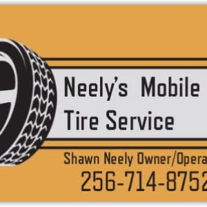

Mobile tire service
He comes to you when a tire fails.
Ask about mobile tire service →
Neely's Mobile Tire ServiceMobile tire help around Gurley, including the tough Sunday roadside calls.
He comes to you when a tire fails.
Ask about mobile tire service →Big and small jobs, per customers.
Ask about semi & light truck →Answers when other shops won't pick up.
Ask about roadside rescue →On a Sunday blowout on Highway 72, Mr. Neely answered, found a wheel, mounted the spare, and had the semi moving within two hours.
Best tire guy in the business for big or small jobs.
| Please call for current hours. |